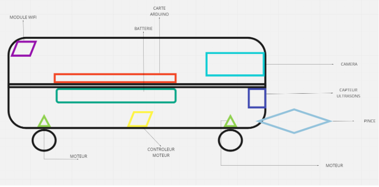

Le robot

Nous expliquons ici le fonctionnement du robot:
Objectif du robot :
Les objectifs de ce robot sont à la fois ludiques et pédagogiques. Il s'agit d'amuser, de distraire le ou les utilisateurs et de leur faire découvrir certaines technologies utilisées en robotique.
Le produit envisagé est un robot muni d'une caméra et d’une pince, qui détecte automatiquement les objets qu'on lui présente. L'objet est identifié par sa couleur ou par un QR code. Lorsque celui-ci est détecté, le robot lance une procédure de récupération. L'aspect esthétique du produit et son ergonomie en feront un objet efficace et simple d’utilisation.
Différent mode du robot :
● MODE AUTONOME : une IA permet au robot de récupérer un objet et de le
ramener à son point de départ de façon autonome.
❖ L’IA gère la façon dont le robot se déplace dans l’espace et la façon dont il
utilise la pince pour récupérer les cubes.
❖ L'IA adapte la trajectoire du robot en fonction des différents obstacles
rencontrés.
❖ L’IA gère l'énergie du robot en adaptant sa consommation. Elle
prendra la décision de stopper la mission s'il y a un risque d'un manque d'énergie.
● MODE SOLO : l’utilisateur a le contrôle total du véhicule, il a les possibilités
suivantes:
❖ contrôler les mouvements du robot
❖ utiliser la pince
❖ changer l'aperçu du HUD de son écran
❖ accomplir un objectif
Équipement du robot :
Il sera doté d’une carte arduino R3 MEGA. Cette carte nous
permettra de gérer les composants suivants du robot :
● Une caméra : elle permet de voir en temps réel l'avancée du robot dans la pièce
(Mode solo).
● Une pince : elle permet d'attraper les objets pour les ramener au point de départ.
● Un module wifi : ce module nous permet de nous connecter au robot à distance
et de lui envoyer toutes les informations nécessaires
● 2 roues motrices : elles permettent une meilleure efficacité des mouvements.
Shéma du robot :
